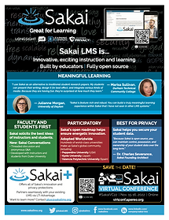
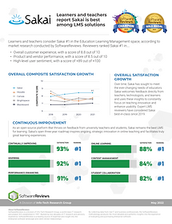

Resources:
EDUCAUSE 2022
TRY SAKAI NOW
Sakai: Great for Learning
Sakai LMS helps instructors create truly inspiring learning experiences. That's why teachers and students love Sakai.
And Sakai innovates constantly, using its market leadership
to advance education technology.
Learn more!

What makes Sakai Great for Learning?

Why do teachers and learners consider Sakai best-in-class?
Add SakaiPlus to
augment, not replace,
your existing enterprise LMS!
We're looking for a few schools to participate
in a pilot with us.
MEANINGFUL LEARNING
Sakai lets instructors create engaging learning content.
FACULTY AND STUDENTS FIRST
Sakai evolves based upon direct feedback from instructors and students.
PARTICIPATORY
Technologists, instructors, and students have a direct hand in shaping Sakai's Open Three-Year Roadmap.
Sakai also centers the voices of blind
and low-vision people when creating
and testing our software.
This makes Sakai different.
BEST FOR PRIVACY
With Sakai, you always own and control
your students' learning data.